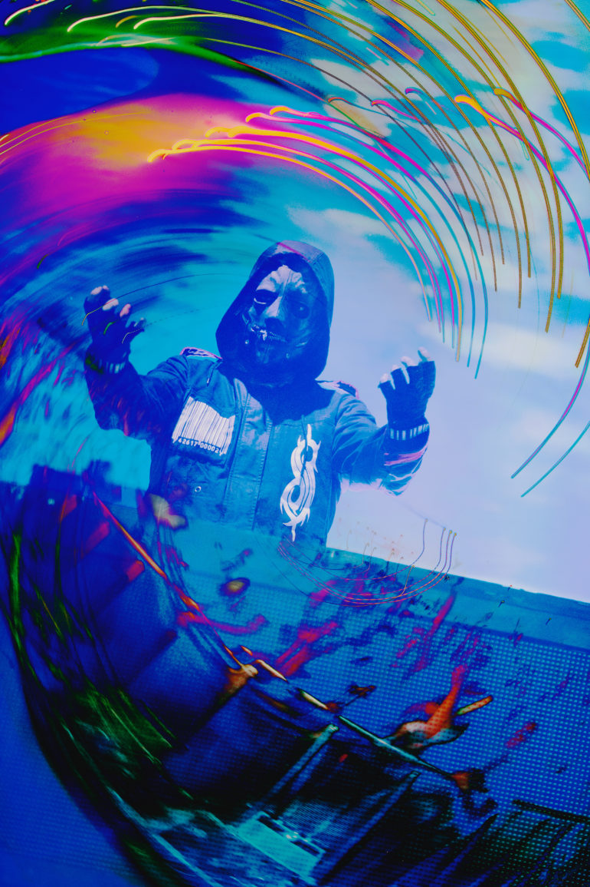
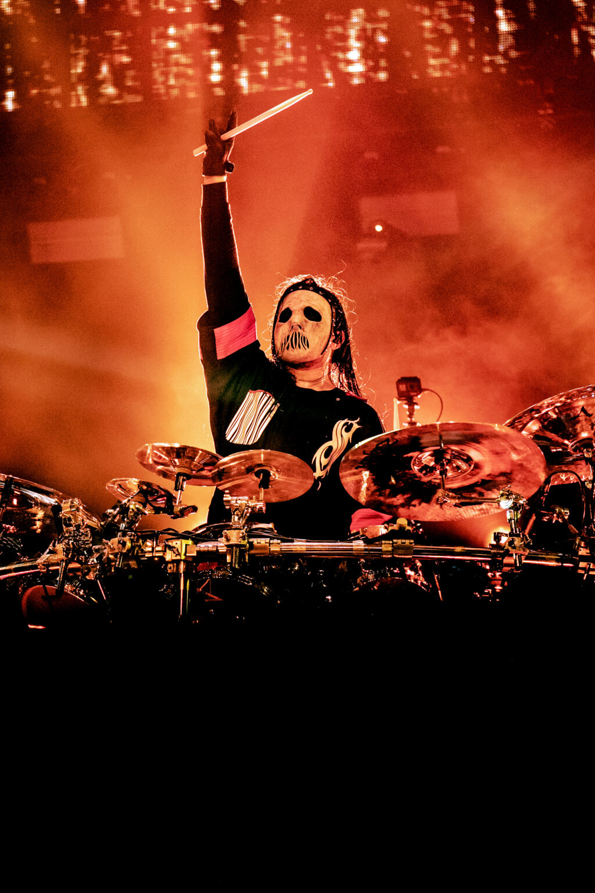
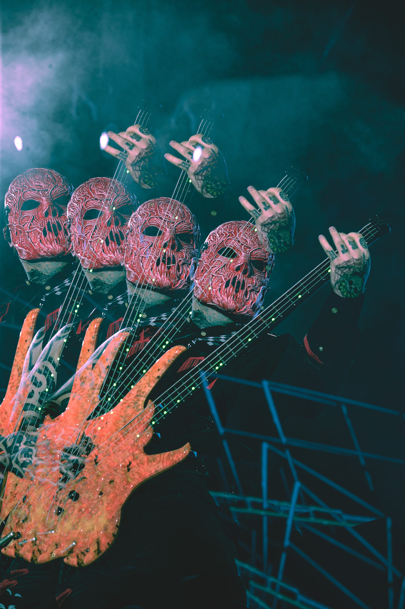
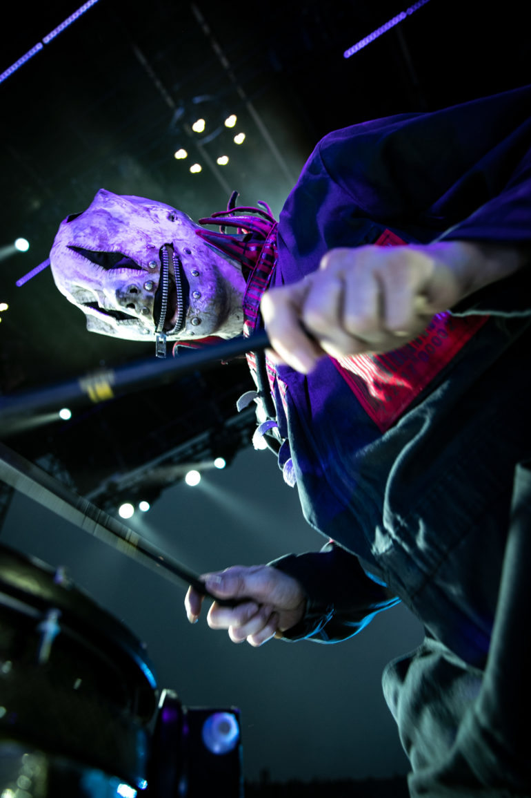
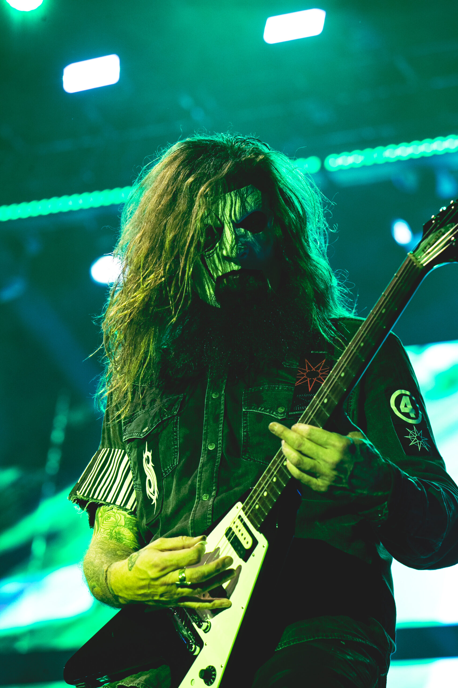
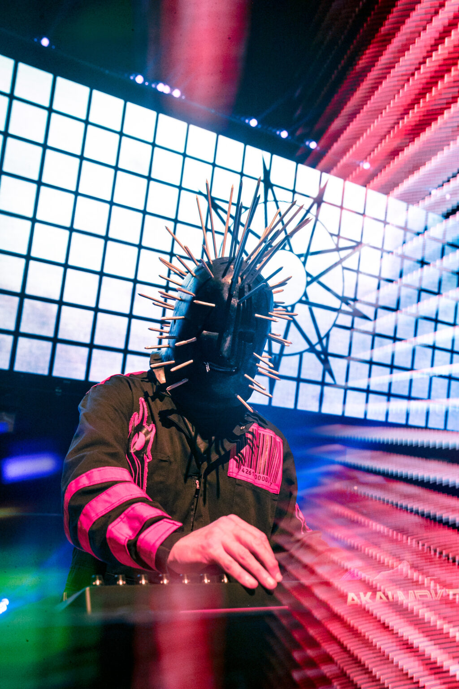
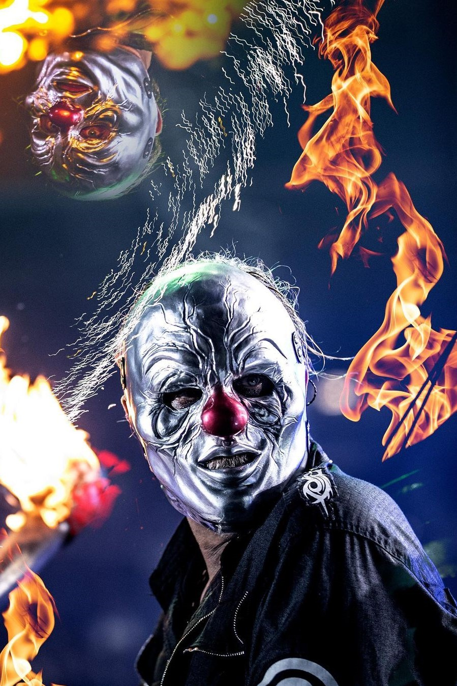
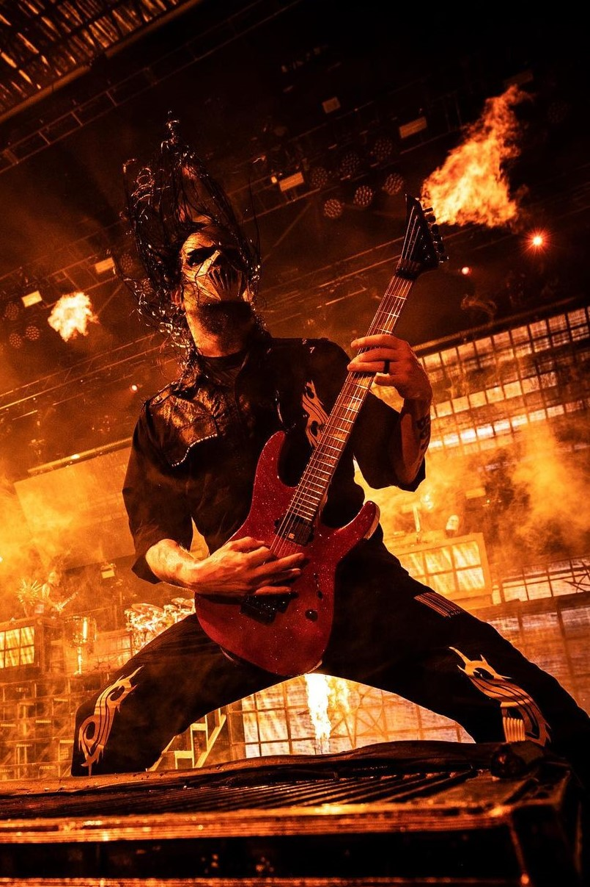
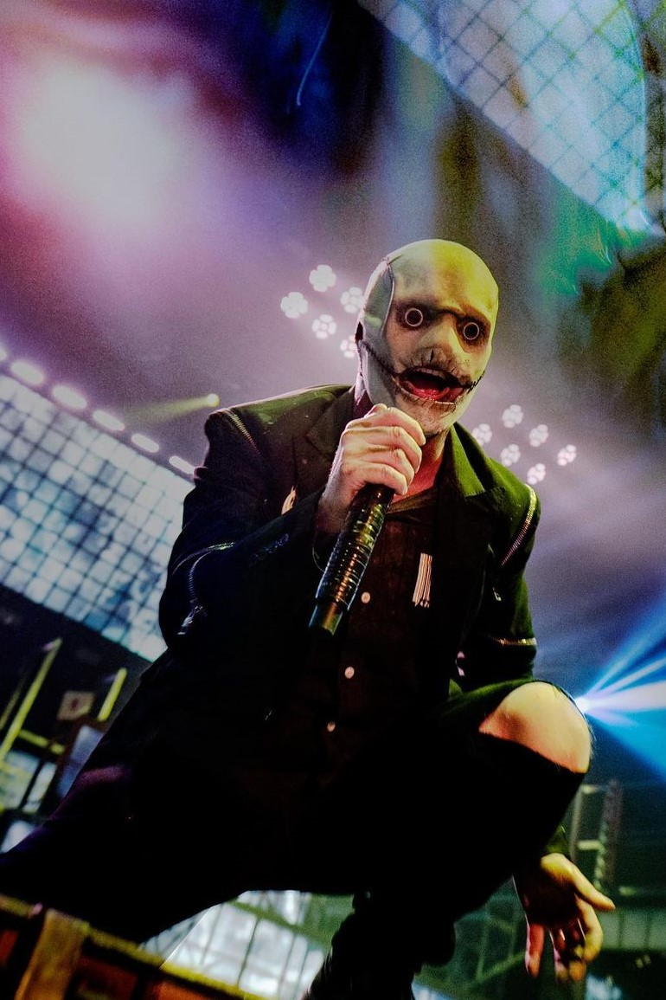

ABOUT US
Slipknot, an American alternative metal band formed in Des Moines, Iowa, in 1995, has been an unstoppable force in the music scene since their explosive debut. Their story is a blend of passion, tragedy, musical innovation, and a fierce dedication to their craft, propelling them to the pinnacle of the metal world.
The core of Slipknot was formed when drummer Shawn Crahan, also known as "Clown," and percussionist Joey Jordison began scouting for musicians for a new band. They were soon joined by guitarist Mick Thomson, bassist Paul Gray, and rhythm guitarist Donnie Steele. Alongside vocalist Anders Colsefni and guitarist Josh Brainard, Slipknot's original nine-member lineup was complete.
Slipknot's sound is an amalgamation of influences ranging from extreme metal to rap and punk. Their music is characterized by frenetic rhythms, heavy guitars, pounding percussion, and lyrics exploring dark themes such as anger, alienation, and self-destruction. This unique combination resonated with avid fans who found in Slipknot's music an outlet for their own frustrations and emotions.
In 1999, Slipknot released their self-titled debut album, which quickly became a phenomenon in the metal world. With tracks like "Wait and Bleed" and "Spit It Out," the album showcased the brutality and raw energy that would define the band's sound in the years to come. Accompanied by their distinctive visual image of masks and numbered suits, Slipknot became a household name in the metal scene.
As the band grew in popularity, they also faced internal challenges and tragedies. In 1999, Josh Brainard left the band due to creative differences, being replaced by Jim Root. Then, in 2010, Paul Gray tragically passed away from a drug overdose, leaving an immense void in the band and in the fan community.
Despite these losses, Slipknot continued their meteoric rise. Albums like "Iowa" (2001) and "Vol. 3: (The Subliminal Verses)" (2004) solidified their status as one of the most influential bands in contemporary metal. They experimented with more melodic and complex sounds, without losing the ferocity that characterized them.
In 2008, the band released "All Hope Is Gone," which debuted at number 1 on the Billboard charts. The album included singles like "Psychosocial" and "Dead Memories," which became instant hits. Despite their continued success, Slipknot faced more lineup changes when Joey Jordison left the band in 2013, citing personal and creative differences.
Since then, Slipknot has continued their reign as one of the dominant forces in the metal world. They have released critically acclaimed albums, headlined sold-out world tours, and inspired legions of fans worldwide. Their dedication to their art and their connection with their fan base has made them an institution in contemporary music.
In summary, Slipknot's history is a saga of perseverance, passion, and creative power. Through ups and downs, tragedies, and triumphs, the band has demonstrated their ability to evolve and stay relevant in an ever-changing musical landscape. With their legacy rooted in authenticity and intensity, Slipknot continues to defy expectations and leave an indelible mark on the world of metal.
|  |  |  |  |  |  |  |  |  |
|---|